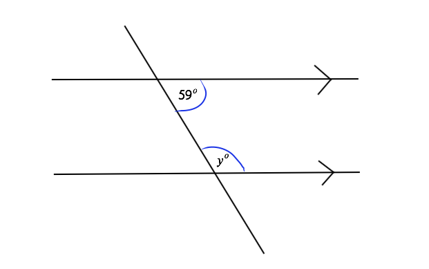

Lines and Angles
Mathematicians use spcific terms and definitions to talk about geometrical figures. You are expected to know what the terms mean and you should be able to use them correctly in your own work.
Terms used to talk about lines and angles
| Term |
What it means |
Examples |
| Point |
A point is shown on a paper using a dot (.) or a cross (⦻). Most often you will use the word 'point' to talk about where two lines meet. You will also talk about points on a grid (positions) and name these using ordered pairs of co-ordinates (𝑥.y).
Points are normally named using capital letters. |
|
| Line |
A line is a straight (one-dimesional) figure that extends to infinity in both directions. Normally through, the word 'line' is used to talk about the shortest distance between two points.
Lines are named using starting point and end point letters |
|
| Parallel |
A pair of lines that are the same distance apart all along their length are parallel. The symbol ∥ is used for parallel lines e.g. AB ∥ CD
Lines taht are parallel are marked on diagrams with arrows. |
|
| Angle |
When two lines meet at a point, they form an angle. The meeting is called vertex of the angle and the two lines are called the arms of the angle.
Angles are named using three letters: the letter at the end of the one arm, the letter at the vertex and the letter at the end of the other arm. The letter in the middle of an angle name always indicates the vertex. |
|
| Perpendicular |
When two lines meet at right angles they are perpendicular to each other. The symbol ⟂ is used to show that the lines are perpendicular, e.g. MN ⟂ PQ |
|
| Acute angle | \
An acute angle is > 0° < 90°. |
 |
| Right angle |
A right angle is an angle of exactly 90°. A square in the corner is usually used to represent 90°. A right angle formed between perpendicular lines. |
|
| Obtuse angle |
An obtuse angle is > 90° but < 180°. |
 |
| Straight angle |
A straight angle is an angle of 180°. A line is considered to be a straight angle. |
 |
| Reflex angle |
A reflex angle is an angle that is > 180° but < 360°. |
|
| Revolution |
A revolution is a complete turn; an angle of exactly 360°. |
|
Measuring and drawing angles
The size of an angle is the amount of turn from one arm of the angle to the other. Angle sizes are measured in degrees (°) from 0 to 360 using a protractor.
When measured angles < 180° you can use a protractor to mesure the angle you would poit the one line at 0° and you would look at where the other line ends up and then that would be the angle you end up on in degrees
When Measuring angles > 180° you can use a protractor by finding the 180° angle and the find the angle from the bottem of the 180° angle found.
Angle realationships
Make sure you know the following angle facts:
Complementary angles
Angles in a right angle add up to 90°.
When the sum of two angles is 90° those two angles are complementary angles.
a+b = 90°
Sublementry angles
Angles on a straight line add up to 180°.
When the sum of two angles is 180° those two angles are supplementary angles.
Angles round a point
Angles at a point make a complete revolution.
The sum of angles at a point is 360°
Vertically opposite angles
When two lines intersect, two pairs of Vertically opposite angles are formed.
Vertically opposite angles are equal in size.
Angles and parallel Lines
When two parallel lines are cut by a third line (the transversal) eight angles are formed. These angles form pairs which are related to each other in specific ways.
Corresponding angles ('F'-shape)
When two parallel lines are cut by a transversal four pairs of corresponding angles are formed.
Corresponding angles are equal to each other.
Alternate angles ('Z'-shape)
When two parallel lines are cut by a transversal two pairs of alternate angles are formed.
Alternate angles are equal to each other.
Co-interior angles ('C'-shape)
When two parallel lines are cut by a transversal two pairs of co-interior angles are formed.
Co-interior angles are supplementary (together they add uo to 180°)
